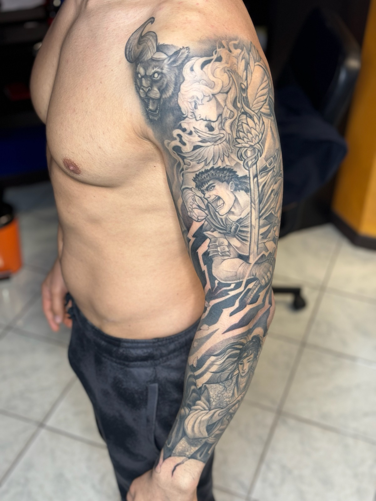

01 / 06
Blackwork
Campiture di nero pieno, linee decise e motivi geometrici o ornamentali. È lo stile che invecchia meglio: il nero resta leggibile per decenni e si adatta alle forme del corpo.
Lavoriamo il blackwork come un disegno architettonico: prima la struttura, poi i pieni. Funziona benissimo anche per coprire vecchi tatuaggi.
- Ideale perMandala, fasce, motivi ornamentali, cover-up
- Durata indicativaDa 2 ore a più sedute
- DimensioneMedio e grande
- ConsiglioSui pezzi grandi le campiture si fanno in più sedute, per rispettare la pelle.